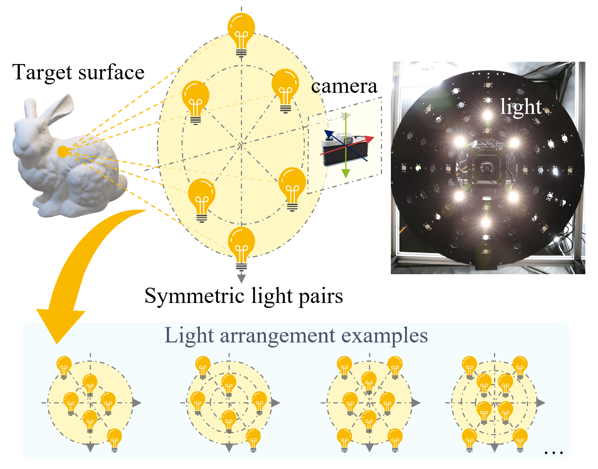

Publications
International Conference Papers

New!
Spectral Sensitivity Estimation with an Uncalibrated Diffraction Grating
Proceedings of IEEE International Conference on Computer Vision (ICCV), 2025

Near-light Photometric Stereo with Symmetric Lights
Proceedings of IEEE International Conference on Computational Photography (ICCP), 2023

Shape-coded ArUco: Fiducial marker for bridging 2D and 3D modalities
Proceedings of IEEE/CVF Winter Conference on Applications of Computer Vision (WACV), 2022
Domestic Conference Papers
High-resolution image generation by image synthesis
23rd Meeting on Image Recognition and Understanding (MIRU), Aug. 2020. (in Japanese)